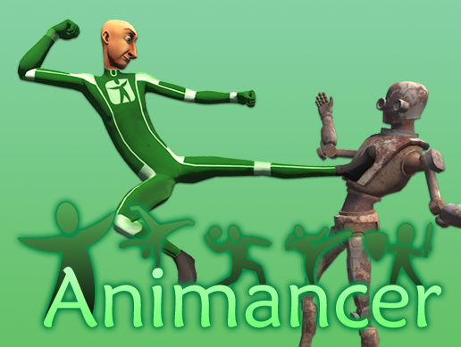
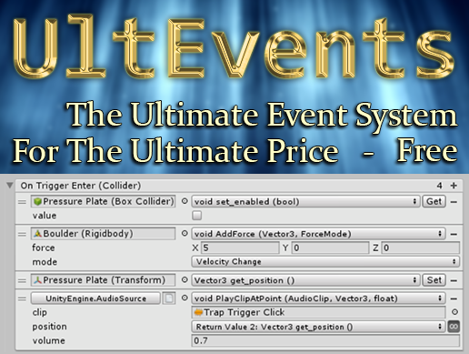

I have released several Unity Assets over the years, mostly plugins which focus on improving development productivity and code architecture to allow for easier refactoring and debugging.

AnimancerA powerful animation system which provides more control over your animations and solves many of the common problems with Animator Controllers by allowing scripts to directly reference Animation Clips and play them without any additional setup steps.[Animancer Pro] [Animancer Lite] [Documentation] [Forum] [Support: AnimancerUnityPlugin@gmail.com] |

Inspector GadgetsAn enhanced transform inspector and various other editor tools which can help improve your productivity.[Inspector Gadgets Pro] [Inspector Gadgets Lite] [Documentation] [Forum] [Support: KybernetikGames@gmail.com] |

WeaverA system which lets you avoid using magic strings, making your scripts more robust and easier to refactor.[Weaver Pro] [Weaver Lite] [Documentation] [Forum] [Support: KybernetikGames@gmail.com] |

UltEventsAllows you to easily setup and configure persistent event callbacks via the Inspector. It serves the same purpose as the inbuilt UnityEvents, but has superior features with fewer restrictions and an improved Inspector interface which requires fewer clicks to perform individual tasks.[UltEvents] [Documentation] [Forum] [Support: KybernetikGames@gmail.com] |

Link & SyncA tool for importing external assets and easily synchronising changes when they occur.[Link & Sync Pro] [Link & Sync Lite] [Support: KybernetikGames@gmail.com] |

Simple Sun ShaderAn easy to use shader that draws an animated sun with various dynamic parameters. Praise the Sun.[Simple Sun Shader] [Support: KybernetikGames@gmail.com] |